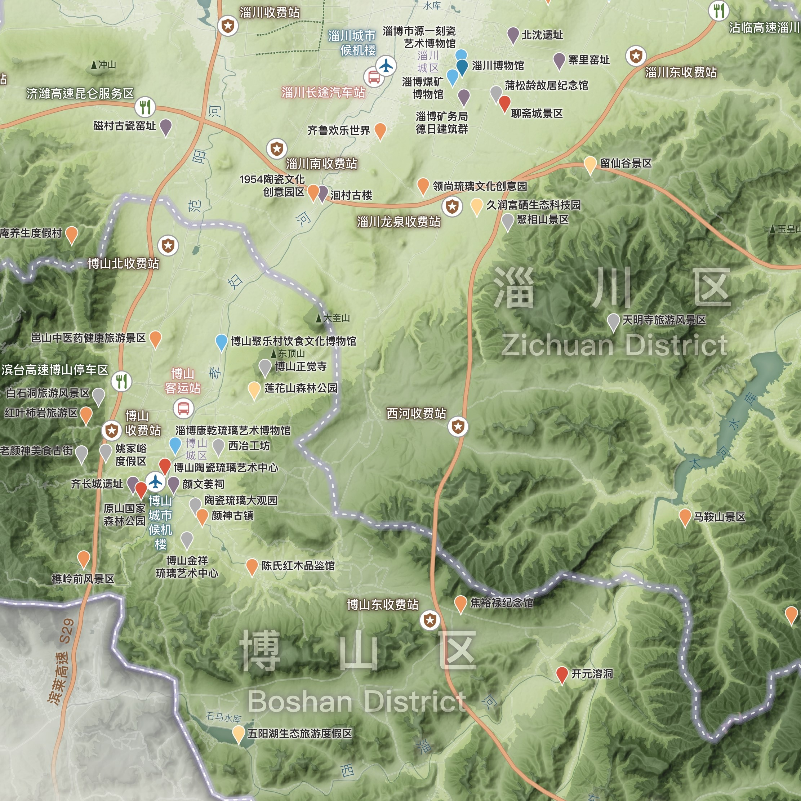
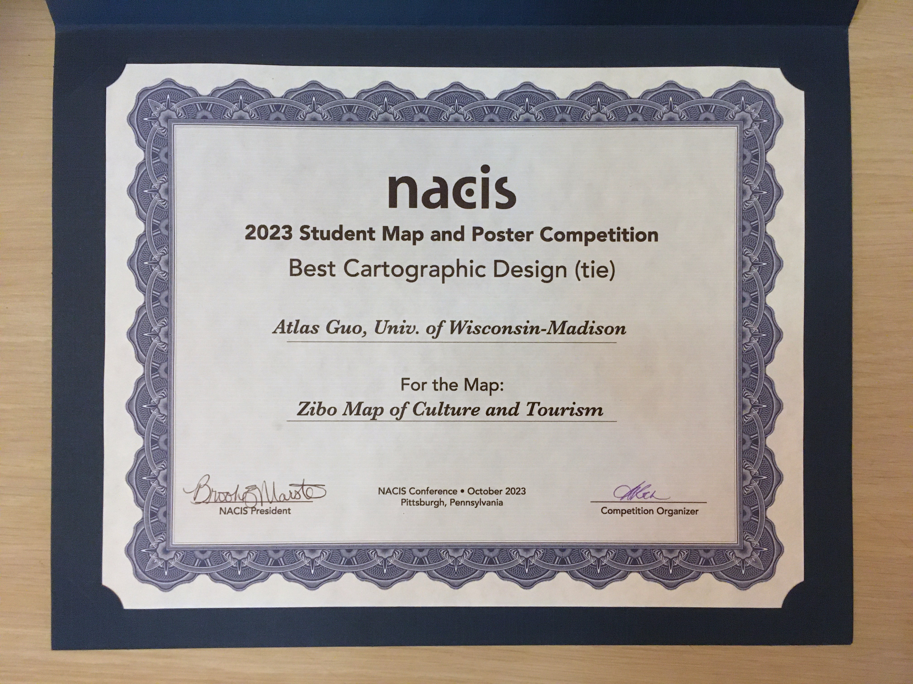
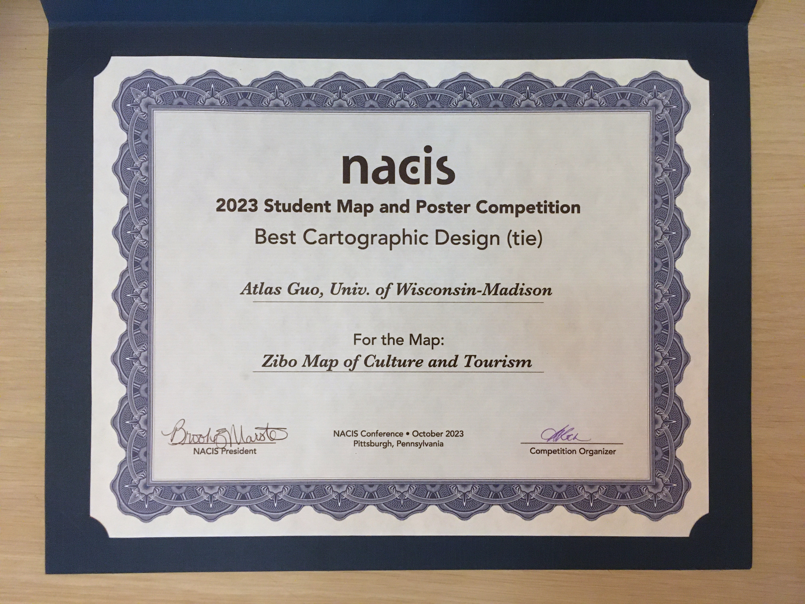

Zibo Map of Culture and Tourism
Best Cartographic Design in
2023 NACIS Map Competition;
Inclusion in Atlas of Design Vol.7
 View Full Image
View Full Image
My homeland, the City of Zibo in China, became a nationwide hotspot in the spring of
2023 due to its distinctive barbecue cuisine and honest, simple folk customs. To
help promote tourism, I designed this map to introduce the history and culture of
this beautiful city, showcasing its natural features, tourist attractions, public
transportation, and some fun facts. The initial version was created in Chinese; in
subsequent revisions, some information was translated into English to serve
international readers.
This map is a reference map enriching with cultural and tourism information. The
topographic base map combines hillshades and stratified colors, presenting the
natural landscape’s beauty. It clearly illustrates the topographic characteristics,
with higher elevation in the south and lower in the north, setting an elegant visual
tone for terrain representation, with Zibo's major peaks and some suburban hills
labeled.
In terms of symbol design, important tourism and transportation information is
prioritized. This includes transportation hubs (railway stations, transit centers,
airport shuttle hubs, highway toll gates, and service areas), transportation lines
(high-speed railway and highway networks), and city bus "Barbecue Lines" and
"Tourism Lines" specially designed in metro transit style. The map categorizes
tourist attractions into different levels and types, such as museums, historic
sites, and other popular spots.
This map includes two insets: The top right corner features a locator map of
Shandong Province, showing the administrative boundaries of prefecture-level cities
and essential physical geography. The bottom left corner shows a map of downtown
Zibo, marking the main roads, business districts, featured barbecue restaurants, and
a fun fact in local toponymy.
This map subtly integrates historical and cultural elements into its graphic design,
such as barbecue kebabs combined with the map scales, ancient knife-shape money and
a symbolic sculpture in railway station plaza as the north arrows, revealing Zibo’s
rich history as the capital city of Qi State (1046 - 221 B.C.), one of the most
populated Chinese cities at that time. The design of the landmark Haidai Tower,
featuring “Zhongshuge”, known as the most beautiful bookstore in China, is specially
showcased.
As a native of Zibo, this map holds great significance to me. I literally cannot
make any other map with the same level of confidence, as it is tied to countless
personal memories. During the data collection process, I was so amazed by the rapid
and substantial development of my hometown in terms of infrastructure and
attractions. With deep love and passion, I respectfully present my map as a gift to
this lovely land, Zibo.
See the zoom-in image below.

Below is the inset map of Zibo Central Urban Area (Zhangdian District), with minor revisions to generally work as an independent map as well.

Below is the inset map of Shandong Provice, with minor revisions to generally work as an independent map as well.

I presented this map during the 2023 annual conference of North American Cartographic
Information Society (NACIS), and won the Best
Cartographic Design Award (tie) in Student Map and Poster Competition.
 
This map is also selected into the Atlas
of
Design, Volume VII, published by the North American Cartographic Information
Society (NACIS).

This map is also selected into the Atlas
of
Design, Volume VII, published by the North American Cartographic Information
Society (NACIS).

And as the Honorable Mention artwork in UW-Madison 15th Annual Digital Salon, the large printed version of this map is displayed at the Collge Library of UW-Madison.

Zibo's barbeque became a phenomenal hotspot in China during the spring of 2023. To
better advertize
Zibo for the May Day (Labor Day Holiday) in 2024, my Zibo Map of Culture and Tourism
was
featured on two local public media platforms: Zibo Luzhong Morning Post, and Zibo
Daily
Newspaper.
I made some short video clips introducing this Zibo map, and
posted on several social media
platforms (mostly on WeChat Video Channel), and got about 10K views so far.
View the Wikipedia
Page to learn more about Zibo.